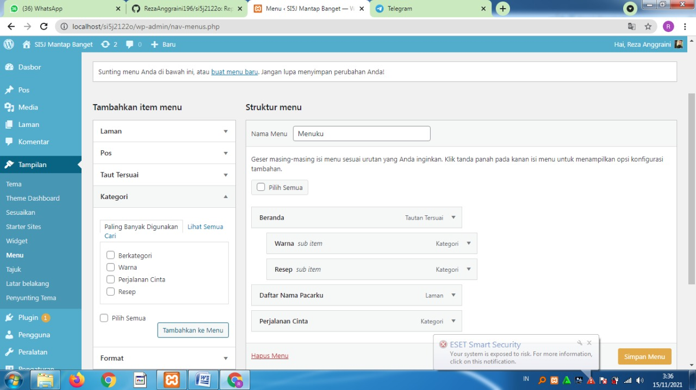

NIM = 1922500196
Nama = Reza Anggraini
Kelompok = SI5J
Pada pertemuan 4 Mata Kuliah Rekayasa Web membahas materi mengenai :
- Tahap pertama, buka xampp control panel jalankan apache dan mysql
- Tahap kedua, Pada browser buka alamat http://localhost/si5j2122o/ dan tab baru buka alamat http://localhost/si5j2122o/wp-admin
- Tahap ketiga, pada halaman login ke backend silahkan isi username = admin dan password=admin
- Tampilan (Appereance) Selain menu pos, menu tampilan (Appereance) menjadi menu favorit pengguna karena fungsinya yang sering digunakan untuk merubah tema website. Berikut merupakan daftar submenu penting yang perlu diketahui dari menu Appereance:
- Tema (Template): bagian ini berfungsi untuk mengatur tema. Bisa untuk mengupload, menghapus atau memilih dari daftar template yang disediakan pihak WordPress
- Sesuaikan (Customize): berfungsi untuk mengotak-atik tampilan website secara live tanpa perlu masuk ke source code
- Widget: submenu ini bisa Anda manfaatkan untuk mempercantik dan memperkaya bagian sidebar, footer, dan terkadang juga header. Widgest juga dapat di instal di browser contohnya : classic-widget
- Menu: berfungsi untuk membuat menu yang ditapilkan di bagian header dan footer
- Theme Editor: submenu ini bisa sangat berguna ketika ingin menambahkan kode tracking Google Analytics atau Search Console.
Berikut tampilan hasil dari pertemuan 4:
